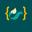

SciML Infrastructure v1.0
Certainty
In An Uncertain World.
Muunnamme kohinaisen reaalimaailman datan deterministisiksi, auditoitaviksi päätöksiksi. Korkean suorituskyvyn tensorilaskentaa ja fysiikkaohjattua koneoppimista JAX/XLA-ekosysteemissä.

vojker_engine.py [XLA_COMPILE]
import jax.numpy as jnp
from jax import vmap, pmap, jit
from jax import vmap, pmap, jit
@jit
def tqg_signal_filter(tensor_snapshot):
# Axes: b=snapshot, n=instruments, d=features, k=depth
b, n, d, k = tensor_snapshot.shape
signal = jnp.mean(tensor_snapshot, axis=-1)
return jnp.tanh(signal)
def tqg_signal_filter(tensor_snapshot):
# Axes: b=snapshot, n=instruments, d=features, k=depth
b, n, d, k = tensor_snapshot.shape
signal = jnp.mean(tensor_snapshot, axis=-1)
return jnp.tanh(signal)
Pipeline Status: Execution Optimized
Shape: (b, n, d, k)